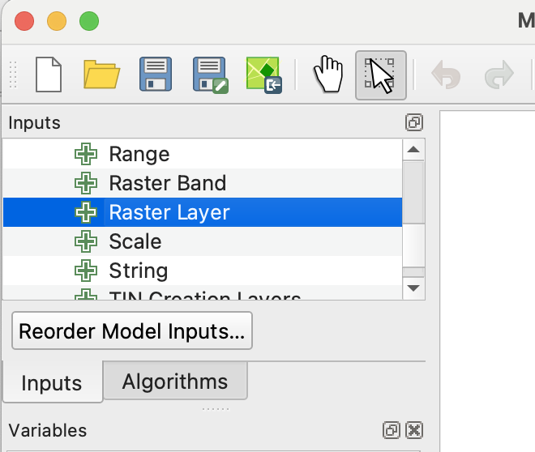

THis is not done yet, do not start
Gran Chaco Land-Use Change Detection
Goal
Detect land-use change and deforestation in the Gran Chaco using dry-season satellite image composites.
Qx: Answer the questions asked given in the boxes in answers.txt.
Study Area
- Use the Gran Chaco AOI GeoJSON as the area of interest.
- The AOI covers dry forest and agricultural clearing near the Cerro Chovoreca frontier in northern Alto Paraguay.
- Dry-season imagery composites are used to avoid cloud cover and reduce seasonal differences.
Data
You are being provided with data for an area in Paraguay’s Gran Chaco region. The AOI includes dry forest and more recent agricultural clearing near the Cerro Chovoreca frontier. The dataset includes annual dry-season median composites made from June-August imagery.
Landsat 5, 7, 8 and 9 images were searched from June through August for the years 2000-2025 using Google Earth Engine. Images were filtered by date, area of interest, and sun angle. Cloud and cloud-shadow masking and surface reflectance scaling functions were then mapped over the image collections. Finally, the images for each year were reduced to annual dry-season median composite images. If you would like to see how this was done, see this notebook. (The notebook also builds Sentinel-2 composites, which are not used in this lab.)
The landsat/ directory holds six composites, five years apart (Table 1). The files are named <sensor>_<year>_dry_season.tif, where the sensor prefix tells you which satellite the imagery came from.
landsat/ directory.
| File | Sensor | Year | Pixel size |
|---|---|---|---|
l57_2000_dry_season.tif |
Landsat 5 and 7 | 2000 | ~30 m |
l57_2005_dry_season.tif |
Landsat 5 and 7 | 2005 | ~30 m |
l57_2010_dry_season.tif |
Landsat 5 and 7 | 2010 | ~30 m |
l89_2015_dry_season.tif |
Landsat 8 and 9 | 2015 | ~30 m |
l89_2020_dry_season.tif |
Landsat 8 and 9 | 2020 | ~30 m |
l89_2025_dry_season.tif |
Landsat 8 and 9 | 2025 | ~30 m |
These years were picked from a full 2000–2025 series because they are evenly spaced and have few image artifacts. Some years in between have stripes from the failed scan-line corrector on Landsat 7, or come from extreme drought years that make change hard to detect.
All files cover the same area and share these properties:
- Bands: six bands, named
blue,green,red,nir,swir1andswir2, in the order shown in Table 2. - Values: surface reflectance, already scaled to 0–1. A value of 0.2 means the surface reflected about 20% of the incoming light in that band. Healthy vegetation has low red (~0.05) and high NIR (~0.2–0.3) values.
- CRS: EPSG:4326 (WGS 84), so coordinates and pixel sizes are in degrees, not meters. You will reproject to the project CRS before calculating areas.
- Missing data: pixels masked for cloud or cloud shadow are stored as NaN.
| Exported TIF band | Common name | Landsat 5/7 band | Landsat 8/9 band |
|---|---|---|---|
| 1 | Blue | SR_B1 | SR_B2 |
| 2 | Green | SR_B2 | SR_B3 |
| 3 | Red | SR_B3 | SR_B4 |
| 4 | Near infrared | SR_B4 | SR_B5 |
| 5 | Shortwave infrared 1 | SR_B5 | SR_B6 |
| 6 | Shortwave infrared 2 | SR_B7 | SR_B7 |
Setup
Download the data here. Extract the folder found within the zip to your nr218 directory. The project folder contains a QGIS project file and six TIFs in a directory called landsat/.
Open the QGIS project. Set the project CRS to an appropriate UTM CRS.
Q1: Why did you choose the particular variant of UTM zone 21S that you did? Contrast it to others and explain the difference.
Change Detection Workflow
First visually inspect the data to get an idea what you are looking at.
- Choose comparison years.
- Select one older image and one newer image.
- Suggested pair: 2000 (
l57_2000_dry_season.tif) vs 2025 (l89_2025_dry_season.tif). Both are 30 m Landsat composites, so the pixels line up and you capture 25 years of change.
- Inspect false-color composites.
- Use NIR, red, green to highlight vegetation.
- Use SWIR1, NIR, red to highlight bare soil, clearing, and dry vegetation.
Now that you have given it the old eyeball, you can start trying to quantify year to year change.
Calculate NDVI and extract SWIR1.
You will work with six Landsat composites, five years apart, from the landsat/ folder: 2000, 2005, 2010, 2015, 2020 and 2025. For each one you will make two single-band rasters:
- NDVI, the classic “greenness” index.
- SWIR1, the shortwave infrared 1 reflectance (band 5) on its own.
You will use both to detect clearing and then compare how well each one works.
You will use QGIS Model Designer to build one model that, for each composite raster, calculates NDVI and extracts SWIR1, and saves each result to its own folder.
Create the output folders. Create an
ndvidirectory and aswir1directory next to the QGIS project file.gran_chaco_<firstname>_<lastname>/ ├── gran_chaco.qgz ├── landsat/ │ ├── l57_2000_dry_season.tif │ ├── ... │ └── l89_2025_dry_season.tif ├── ndvi/ └── swir1/Open Model Designer and name the model.
- Open Processing –> Model Designer…
- In the panel at the lower left, set the Model Name to “calc NDVI and SWIR1” and the model group to “calc index”.
Add the raster input.
- At the top of the left panel, open the Inputs tab (see Figure 1).
- Double click Raster layer.
- In the dialogue, enter
input_imageas the description (this will serve a reference to the input, so the exact name will be important later), check the mandatory box, then close the dialogue.

Figure 1: Add raster layer dialog in the QGIS graphical modeler. Save the model. Press the “save model in project” button (). (If you want to use this model in another project, you can save it as a file with the Save model as button.)
Reproject the raster to the project CRS.
- Click the Toolbox tab in the left panel and search for “Warp”.
- Click Warp from GDAL -> Raster Projections.
- Change the description to “Warp to project CRS”.
- Use
input_imageas the input layer and check the Use project CRS box. - Change Resampling method to use to bilinear, then close the dialogue.
- Press the “save model in project” button.
Add the Raster calculator and connect the bands. Recall that the formula for NDVI is
\[ \frac{NIR - Red}{NIR + Red} \]
and from Table 2 you can see that NIR is band 4 and red is band 3 in the input image.
- From the toolbox add GDAL -> Raster miscellaneous -> Raster calculator.
- Add the description “calc NDVI”.
- Under Input layer A, click the Model input button () and change it to Algorithm Output.
- In the dropdown next to the Algorithm output button (), select “Reprojected” from algorithm “Warp to project CRS”.
- Under Number of raster band for A, enter 4 (NIR).
- Repeat for Input layer B, but use band 3 (red).
Enter the NDVI formula. In Calculation in gdalnumeric syntax using… enter
(A - B) / (A + B).Set the output filename. We want to run this tool as a batch process and save the results to file, so the output name is built from the input name.
- Change the button under Calculated to Pre-calculated Value.
- Enter this QGIS expression:
@project_folder || '/ndvi/NDVI_' || base_file_name(decode_uri(@input_image, 'path')) || '.tif'For more on this see the Expression breakdown tip box.
Expression breakdown@project_folderis a QGIS variable for the folder containing the current.qgzproject||is a string concatenation, meaning “join these text pieces”'/ndvi/NDVI_'is literal text: the output folder plus the prefix for the new filename@input_imageis the model input variable; this must match the input name that you specified when you added the input to the modeldecode_uri(@input_image, 'path')extracts the filesystem path from the input raster/layer URIbase_file_name(...)gets the file stem without folder or extension'.tif'is the file extension to add
Change your model to extract SWIR1 as well. SWIR1 is not an index. You just need band 5 by itself, warped to the project CRS like the NDVI. The warped raster already exists inside the model, so you only need to add a second Raster calculator that uses it:
- Add that raster calculator to extract SWIR1.
- Write the result to the
swir1folder with aSWIR1_prefix - Press the “save model in project” button.
Your model now has one input, one Warp step, and two Raster calculators branching off the Warp:
input_image ──> Warp to project CRS ──┬──> calc NDVI ──> ndvi/NDVI_<input name>.tif └──> extract SWIR1 ──> swir1/SWIR1_<input name>.tifRun the model as a batch process.
- Save the model and close Model Designer.
- In the Processing Toolbox, open Project models -> calc index, right-click “calc NDVI and SWIR1” and choose Execute as Batch Process…
- At the top of the
input_imagecolumn, click Autofill… and choose Select from Available Layers… Tick the six composites from thelandsat/folder and click OK. You get one row per raster. (The rasters must be loaded in the project to show up in this list.) - Click Run. The output filenames come from the expressions in steps 8 and 9, so there is nothing to fill in for the outputs. Each row writes two files, so you should end up with six rasters in
ndvi/and six inswir1/. - Add the new rasters in
ndvi/andswir1/to the project (for example by dragging them in from the Browser panel). The next step needs them loaded.
Before you go on, put SWIR1_l57_2000_dry_season and SWIR1_l89_2025_dry_season side by side. Style both with the same min/max (about 0.1 to 0.35). Intact forest is dark in SWIR1 (roughly 0.15–0.19). Cleared fields are bright (above about 0.21). Now do the same with the two NDVI layers.
Q2: Which one shows the cleared fields more clearly?
Q3: Check the pixel size of one of your new SWIR1_ rasters (Layer Properties → Information). Why isn’t it exactly 30 m?
Calculate change between dates
Next you will subtract each date’s raster from the one five years later. The result shows where the value went up or down over those five years:
\[ \Delta = value_{later} - value_{earlier} \]
- dNDVI: a large negative value may mean vegetation loss.
- dSWIR1: a large positive value may mean clearing, because cleared ground is brighter in SWIR1 than forest. Note the sign is the opposite of dNDVI.
- Values near 0 mean little or no change.
This time you do not need a model. There is only one step, so you will run the GDAL Raster calculator directly as a batch process. The NDVI and SWIR1 rasters are already in the project CRS, so no Warp step is needed either.
Create the output folders. Create a
changedirectory next to the QGIS project file, with a folder inside it for each layer type.gran_chaco_<firstname>_<lastname>/ ├── gran_chaco.qgz ├── landsat/ ├── ndvi/ ├── swir1/ └── change/ ├── dNDVI/ └── dSWIR1/Open the Raster calculator as a batch process. In the Processing Toolbox, find GDAL -> Raster miscellaneous -> Raster calculator, right-click it and choose Execute as Batch Process… (Make sure you use the GDAL one. There is also a QGIS Raster calculator under Raster analysis, which works differently.)
Fill in the layer pairs. Each row subtracts one pair of rasters: the later date goes in Input layer A and the date five years before it goes in Input layer B. Start with SWIR1:
- At the top of the Input layer A column, click Autofill… -> Select from Available Layers… and tick the
SWIR1layers for 2005, 2010, 2015, 2020 and 2025 (every date except the oldest). This makes 5 rows. - At the top of the Input layer B column, do the same, but tick 2000, 2005, 2010, 2015 and 2020 (every date except the newest).
- Leave Number of raster band for A and Number of raster band for B at 1. These rasters only have one band.
Check your pairs before you runAutofill fills the rows in the order the layers appear in the list, which may not be date order. Before you click Run, read down both columns and make sure every Input layer A is exactly five years after the Input layer B in the same row (2005 and 2000, 2010 and 2005, and so on). If a row is off, use the dropdown in that cell to pick the right layer.
Mixing Landsat 5/7 and Landsat 8/9The 2010→2015 pair compares a Landsat 5/7 composite with a Landsat 8/9 composite. That is fine here: all six composites were exported on exactly the same grid, and SWIR1 values for unchanged forest are very similar for both sensor groups.
Q4: The 2010→2015 pair compares Landsat 5/7 with Landsat 8/9. What would you check to convince yourself this comparison is fair?
- At the top of the Input layer A column, click Autofill… -> Select from Available Layers… and tick the
Enter the subtraction. In the first row of the Calculation in gdalnumeric syntax… column enter
A - B, then click Autofill… -> Fill Down at the top of the column to copy it to every row. The order matters: later minus earlier.Set the output filenames.
- In the first row of the Calculated column, click the … button and choose Save to File…
- Go to
change/dSWIR1/, enterd.tifas the filename and click Save. - In the Autofill settings dialogue, choose Fill with parameter values and pick Input layer A as the parameter, then click OK.
- This will insert the name of Input layer A directly before
.tif.
Each output is named
dplus the name of its later layer. For example,SWIR1_l89_2025_dry_seasonminusSWIR1_l89_2020_dry_seasonis saved aschange/dSWIR1/dSWIR1_l89_2025_dry_season.tif, the change from 2020 to 2025. Check that the output column looks like this before you run.Run, then repeat for NDVI.
- Click Run.
- Repeat steps 2–5 with the
NDVIlayers, saving intochange/dNDVI/. - Add all ten change rasters to the project.
Compare dNDVI and dSWIR1
Style the change rasters so they are easy to compare:
- dNDVI: singleband pseudocolor,
RdYlGncolor ramp, min −0.4, max 0.4. Red = NDVI went down, green = NDVI went up. - dSWIR1: singleband pseudocolor,
RdYlGncolor ramp inverted, min −0.1, max 0.1. Red = SWIR1 went up (possible clearing), green = SWIR1 went down.
Now look closely at two periods, 2010→2015 and 2015→2020, and answer these questions:
Q5: In
dNDVI_l89_2020_dry_season(2015→2020), what color is the large area of forest that was never cleared? If you used dNDVI alone, what would you conclude happened to that forest? (Make sure the ramp is set to min −0.4 and max 0.4 as described above. With QGIS’s default min/max, the colors are stretched to fit this layer’s values and the forest will look misleadingly normal.)
Q6: In
dNDVI_l89_2015_dry_season(2010→2015), find a field that was cleared during that period (compare the 2010 and 2015 composites). Did NDVI go up or down there? Why might clearing a forest make NDVI go up?
Q7: Look at the same two periods in dSWIR1. Does the uncleared forest stay near 0? Do the newly cleared fields stand out?
The Gran Chaco has a strong dry season, and how dry it gets changes a lot from year to year. Judging from the imagery, the dry seasons of 2015 and 2025 were relatively wet and green, while 2010 and 2020 were much drier.
- In a dry year the forest drops some leaves and gets less green, so its NDVI falls even though nothing was cut. Compare 2015 (wet) with 2020 (dry) and the whole forest looks like it lost vegetation.
- In a wet year the planted pastures turn bright green, often greener than the forest itself. So a field cleared between 2010 (dry) and 2015 (wet) can have a higher NDVI afterward than the forest it replaced.
NDVI measures greenness, and greenness here depends mostly on rainfall. SWIR1 responds to the structure of the surface. A forest canopy is rough and full of shadow and moist leaves, so it stays dark in SWIR1 whether the year is wet or dry. Pasture and bare soil are flat and bright in SWIR1, whether the grass is green or dead. That is why the forest/cleared difference in SWIR1 holds up across wet and dry years.
Map clearing
A pixel was cleared during a five-year period if both of these are true:
- It was forest at the start: SWIR1 in the earlier year is below 0.20.
- It got brighter: dSWIR1 is greater than 0.05.
The first condition matters. Without it, fields that were already cleared and just got drier between two years would also be counted as new clearing.
Create the output folder. Create
change/cleared/.Open the GDAL Raster calculator as a batch process (same as before).
Fill in the inputs.
- Input layer A: Autofill with the
dSWIR1layers for the later year of each pair 2005, 2010, 2015 and 2020. - Input layer B: Autofill with the
SWIR1layers for the earlier year of each pair: 2000, 2005, 2010 and 2015. - Check that the pairs are properly aligned:
dSWIR1_l57_2005_dry_season(2000→2005) goes withSWIR1_l57_2000_dry_season, and so on.
- Input layer A: Autofill with the
Enter the rule. In the first calculation cell enter the expression below, then use Fill Down:
(B < 0.20) * (A > 0.05)Each comparison gives 1 where it is true and 0 where it is false. Multiplying them gives 1 only where both are true, so it works as an AND. This expression reads like, Pixel is forest, AND becomes brighter.
Set the output filenames. Save the first row as
change/cleared/cleared_.tif, then Fill with parameter values from Input layer A. The 2020→2025 result becomescleared_dSWIR1_l89_2025_dry_season.tif.Run, add the results, and check them. Style each cleared layer so 1 is a bright color and 0 is transparent, and put it over the later composite in false color (SWIR1, NIR, red). Do the red patches line up with new fields? Pan around some intact forest: are there false alarms?
The 0.20 and 0.05 thresholds were chosen by checking known forest and known fields in these images. If you find areas where they do not work well, try adjusting them and note what changed.
Q8: We could have done the previous two caluclations (change and mapping clearing) in one step in Raster Calculator. What formula would one use to do so?
Clean the map
The cleared maps contain some single pixels and tiny patches along field edges and roads. Remove them with a sieve:
- Open GDAL -> Raster analysis -> Sieve as a batch process.
- Autofill the input column with the five
cleared_layers. - Set Threshold to 11 and leave Use 8-connectedness unchecked. Each pixel is about 29 m × 29 m ≈ 0.085 ha, so 11 pixels is about 1 ha. Any cleared patch smaller than that is removed.
- Save the outputs to
change/cleared/with the prefixsieved_(save the first row assieved_.tifand Fill with parameter values from the input layer).
Calculate cleared area
- Open Raster analysis -> Raster layer unique values report as a batch process and add the five
sieved_layers. - For each report, find the row where the value is 1. It gives the pixel count and the area in m².
- Convert to hectares (divide by 10,000) and make a table of cleared area for each five-year period.
Which period had the most clearing?
Optional: Polygonize one of the sieved rasters (GDAL -> Raster conversion -> Polygonize) and look at the size and shape of the cleared patches.
Q9: Which five-year period had the most clearing, and how many hectares were cleared?
Validate visually
- Compare each cleared map with the before and after composites.
- Check several cleared fields and several intact forest patches.
- Note any confusion: cropland cycles, bare soil, burned areas, or the rocky, sparsely vegetated hills of Cerro Chovoreca in the north.
Outputs
When you are done, your project folder should look like this. Rename the top-level folder to gran_chaco_<firstname>_<lastname>/ (for example gran_chaco_ada_lovelace/), and put answers.txt directly inside it.
gran_chaco_<firstname>_<lastname>/
├── answers.txt
├── gran_chaco.qgz
├── gran_chaco_aoi.geojson
├── landsat/
│ ├── l57_2000_dry_season.tif
│ ├── ...
│ └── l89_2025_dry_season.tif
├── ndvi/
│ ├── NDVI_l57_2000_dry_season.tif
│ ├── ...
│ └── NDVI_l89_2025_dry_season.tif
├── swir1/
│ ├── SWIR1_l57_2000_dry_season.tif
│ ├── ...
│ └── SWIR1_l89_2025_dry_season.tif
└── change/
├── dNDVI/
│ ├── dNDVI_l57_2005_dry_season.tif
│ ├── ...
│ └── dNDVI_l89_2025_dry_season.tif
├── dSWIR1/
│ ├── dSWIR1_l57_2005_dry_season.tif
│ ├── ...
│ └── dSWIR1_l89_2025_dry_season.tif
└── cleared/
├── cleared_dSWIR1_l57_2005_dry_season.tif
├── ...
└── sieved_cleared_dSWIR1_l89_2025_dry_season.tifEach change file is named after the later year of its pair. The years in brackets show which period each file covers. The same applies to the dSWIR1, cleared_ and sieved_ files. The cleared/ folder holds ten files: five cleared_ files and five sieved_ files.